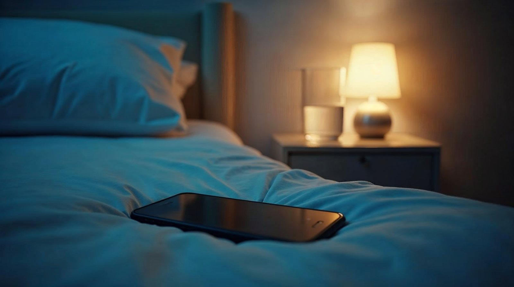
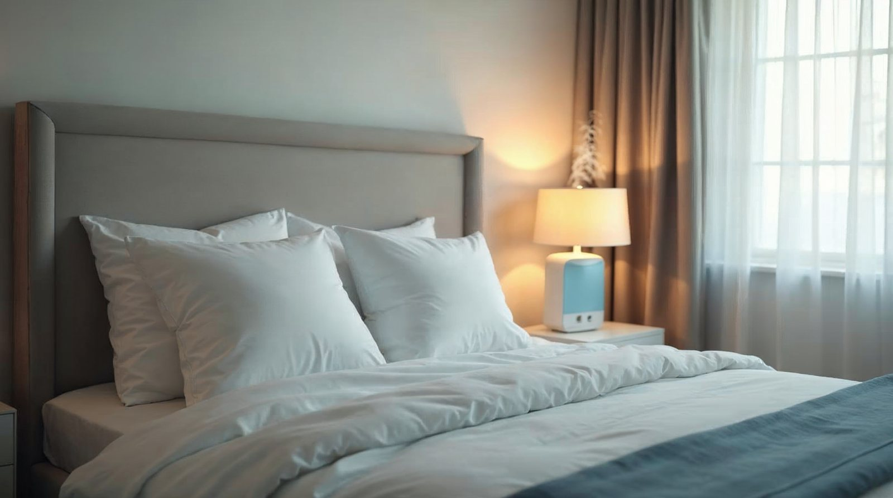
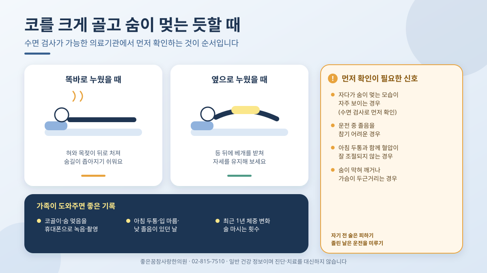

이종호 한의사 감수좋은꿈참사랑한의원 대표원장 (한의사 면허번호 19769)발행 2026-11-22 · 수정 2026-11-26
이 글의 차례
한밤중에 옆에서 드르렁 하던 소리가 뚝 끊깁니다. 방 안이 이상하게 조용해집니다. 몇 초가 지나도 숨소리가 들리지 않아 옆 사람이 어깨를 흔들려는 순간, 컥 하는 소리와 함께 다시 코 고는 소리가 이어집니다. 진료실에서 이 장면을 이야기해 주시는 분은 대개 코를 고는 본인이 아니라 그 곁에서 잠을 설친 가족입니다.
코골이에 숨이 멎는 듯한 모습이 함께 보인다면 저는 수면 검사로 먼저 확인해 보시길 권합니다. 수면무호흡은 증상만으로 단정할 수 없고, 검사를 해 봐야 얼마나 자주 숨이 멈추는지 알 수 있기 때문입니다.
본인은 모르고, 곁에 있는 사람이 먼저 압니다
진료실에서 이런 말씀을 자주 듣습니다. "저는 잘 자는 줄 알았어요. 아내가 녹음한 걸 들려줘서 처음 알았습니다." 코골이와 숨 멈춤은 자는 동안 일어나는 일이라 본인이 알아차리기 어렵습니다. 아침에 머리가 무겁고 입이 바싹 말라 있어도 그냥 피곤해서 그런가 보다 하고 넘기기 쉽습니다.
곁에 있는 가족의 마음은 또 다릅니다. 숨소리가 멎을 때마다 가슴이 철렁해서 깨고, 혹시나 하는 마음에 한참을 지켜보다가 정작 본인이 잠을 못 이룹니다. 그런데 막상 말을 꺼내면 "코 좀 고는 게 무슨 대수냐"는 대답이 돌아와 서운해지기도 하지요.
저는 이런 이야기를 들으면 두 분 모두 애쓰고 계셨다는 생각이 먼저 듭니다. 한 분은 모르는 사이에 밤새 숨을 고르느라, 한 분은 그 숨을 지키느라 잠을 설치신 겁니다.
그래서 저는 가능하면 함께 주무시는 분의 이야기를 꼭 들어 보려 합니다. 진료에 같이 오시기 어렵다면 휴대폰으로 녹음해 두신 소리 몇십 초만 있어도 큰 도움이 됩니다.
함께 오신 가족분께는 "얼마나 자주 그러던가요?", "소리가 멎으면 대략 몇 초쯤 조용했나요?", "주로 똑바로 누워 있을 때였나요, 옆으로 누워 있을 때였나요?" 하고 여쭙습니다. 정확하지 않아도 괜찮습니다. 곁에서 본 사람만 아는 밤의 모습이 있고, 저는 그 기억을 진료의 중요한 단서로 여깁니다.
왜 자는 동안 숨길이 좁아질까요
깨어 있을 때는 목 안쪽 근육이 숨길을 붙잡고 있습니다. 잠이 깊어지면 이 근육이 느슨해지고, 혀와 목젖이 뒤로 처지면서 숨길이 좁아집니다. 좁아진 길로 공기가 지나가며 떨리는 소리가 코골이이고, 아예 막혀 버리는 순간이 숨 멈춤입니다.
막히면 몸은 숨을 쉬려고 잠을 얕게 깨우는데, 이 깸은 너무 짧아서 본인은 대개 기억하지 못합니다. 밤새 이런 일이 되풀이되면 잠을 오래 자도 개운하지 않은 것이 이상한 일이 아닙니다.
숨길을 좁히는 데에는 몇 가지가 겹치곤 합니다.
- 체중이 늘고 목 주변이 두꺼워진 경우
- 자기 전 술이나 수면제로 목 근육이 더 늘어지는 경우
- 비염이나 코막힘으로 입을 벌리고 자는 경우
- 똑바로 누운 자세, 턱이 작거나 편도가 큰 타고난 구조
이 가운데 어느 것이 크게 작용하는지는 사람마다 다릅니다. 마른 분도 턱 구조나 코막힘 때문에 숨길이 좁아질 수 있어서, "나는 살이 안 쪘으니 괜찮다"고 넘기지 않으셨으면 합니다.
그냥 코골이와 확인이 필요한 코골이, 어떻게 다를까요
피곤한 날이나 술 마신 날에만 가끔 코를 골고, 아침에 일어나 개운하다면 크게 걱정하지 않아도 되는 경우가 많습니다. 제가 눈여겨보는 것은 소리 크기보다 그 사이의 침묵입니다. 소리가 끊기고 조용해졌다가 컥 하며 다시 시작되는 모양이 반복된다면 이야기가 달라집니다.
낮의 모습도 중요한 단서입니다. 일곱 시간 넘게 잤는데도 오전 회의 시간에 눈이 감기는지, 텔레비전 앞에 앉으면 금세 조는지, 운전하다가 신호 대기 중에 깜빡 졸아 놀란 적이 있는지 여쭙습니다. 아침에 머리가 지끈거리고 입이 마르거나, 밤에 소변 때문에 자주 깨는 것도 함께 살핍니다. 이런 신호가 여럿 겹치면 수면 검사로 확인해 보는 쪽이 먼저입니다.

녹음은 이렇게 부탁해 보세요
가족에게 녹음을 부탁할 때는 거창하게 준비하지 않으셔도 됩니다. 잠든 지 한두 시간쯤 지나 코골이가 가장 크게 들릴 때, 휴대폰 녹음 앱을 켜서 머리맡에서 조금 떨어진 곳에 두면 충분합니다. 소리가 끊겼다가 다시 시작되는 부분이 담기면 가장 좋고, 그때 대략 몇 초쯤 조용했는지 옆에서 속으로 세어 메모해 두시면 더 도움이 됩니다.
혼자 주무시는 분이라면 잠들기 전에 녹음 앱을 켜 두고 아침에 앞뒤를 건너뛰며 들어 보셔도 됩니다. 처음 들으면 내 숨소리가 이렇게 컸나 싶어 놀라시는 분이 많습니다. 부끄러워하실 일이 전혀 아닙니다. 그 몇십 초가 진료실에서 긴 설명보다 많은 것을 알려 줍니다.
수면 검사가 부담스러운 마음도 압니다
검사를 권해 드리면 망설이시는 분이 적지 않습니다. 병원에서 하룻밤을 자야 한다니 낯설고, 선을 여러 개 붙이고 잠이 오겠나 싶고, 혹시 큰 병이라는 말을 들을까 겁도 나실 겁니다. 바쁜 와중에 하루를 빼는 일 자체가 쉽지 않다는 것도 압니다.
그래도 저는 이렇게 말씀드리곤 합니다. 지금은 밤에 무슨 일이 일어나는지 아무도 정확히 모르는 상태라고요. 짐작으로 이것저것 해 보며 몇 달을 보내는 것보다, 한 번 확인하고 나서 무엇을 할지 정하는 편이 몸에도 마음에도 덜 지칩니다.
검사 결과가 생각보다 괜찮다면 그것대로 안심하고 생활을 다듬으면 되고, 치료가 필요하다면 그 길을 일찍 알게 된 것이니까요.
진료실에서 자주 만나는 모습들
특정한 누구의 이야기가 아니라, 진료실에서 여러 번 겹쳐 들은 이야기를 모아 보면 이렇습니다.
몇 년 사이 체중이 꽤 늘고 저녁 약속이 잦은 직장인이 있습니다. 회식이 있는 날이면 코골이가 유난히 심하다는 말을 듣고, 오후만 되면 커피를 몇 잔씩 마셔야 버틸 수 있다고 하십니다. 이런 분께는 수면 검사를 먼저 권하고, 검사와 별개로 술 마시는 날과 늦은 저녁을 조금씩 줄이는 계획을 함께 세웁니다.
비염 때문에 늘 코가 막혀 입을 벌리고 자는 학생도 있습니다. 아침마다 목이 칼칼하고 수업 시간에 자꾸 졸린다고 합니다. 이럴 때는 코막힘이 언제 심해지는지, 침실 습도와 먼지는 어떤지부터 함께 점검합니다.
배우자가 밤에 숨을 멈추는 모습을 여러 번 봤다며 걱정스럽게 말씀하시는 어르신도 계십니다. 본인은 "나이 들면 다 그렇다"고 하시지만, 낮에 꾸벅꾸벅 조는 일이 잦고 아침 두통이 있다면 저는 수면 검사가 가능한 의료기관을 먼저 안내해 드립니다.
밤의 일이 낮을 흔들 때
수면무호흡을 이야기할 때 저는 밤보다 낮을 더 오래 여쭙습니다. 잠이 밤새 조각나면 그 값은 다음 날 고스란히 돌아옵니다. 오후만 되면 머리가 멍하고, 같은 문장을 몇 번씩 다시 읽게 되고, 별일 아닌 말에도 짜증이 올라옵니다.
가족들은 "요즘 왜 이렇게 예민해졌냐"고 하고, 본인은 "일이 많아서 그렇지" 하고 넘깁니다. 그런데 이야기를 이어 가다 보면 그 예민함이 시작된 무렵과 코골이가 심해졌다는 말을 듣기 시작한 무렵이 비슷하게 겹치는 경우가 있습니다.
이런 연결을 혼자 알아차리기는 어렵습니다. 그래서 진료실에서는 잠 이야기와 함께 요즘 낮에 어떤지, 일이나 공부에 집중이 되는지, 저녁이 되면 기운이 얼마나 남아 있는지를 같이 묻습니다. 그 대답이 수면 검사를 권해 드릴지 판단하는 데 중요한 몫을 합니다.
검사 뒤에 한의원에서 함께하는 일
수면 검사를 받고 나서 처방받은 치료가 있다면 그것을 먼저 이어 가시는 것이 맞습니다. 한의원에서 함께할 수 있는 일은 그 곁에서 생활을 다듬는 쪽입니다. 저녁을 몇 시에 무엇으로 드시는지, 술자리가 일주일에 몇 번인지, 코가 막히는 날은 언제인지, 자고 일어났을 때 목과 어깨가 얼마나 굳어 있는지를 함께 들여다봅니다.
속이 더부룩한 채로 눕는 날이 많은 분, 손발이 차서 잠자리에 들어도 한참 뒤척이는 분, 낮의 긴장이 저녁까지 이어져 몸이 쉽게 풀리지 않는 분처럼 잠을 둘러싼 사정은 저마다 다릅니다. 저는 그 사정을 맥과 이야기로 살펴 침이나 한약 상담이 도움이 될 만한 부분이 있는지 말씀드립니다.
다만 숨 멈춤 자체를 확인하고 관리하는 일은 수면 검사와 그 결과에 따른 치료가 먼저라는 점은 늘 같이 말씀드립니다.

오늘 밤부터 해 볼 수 있는 것
검사를 기다리는 동안이나 숨 멈춤 없이 코골이만 있는 경우라면, 생활에서 먼저 바꿔 볼 수 있는 것이 있습니다. 거창한 것보다 하루의 순서를 조금 바꾸는 쪽이 오래갑니다.
저녁 식사는 잠들기 세 시간 전쯤에 가볍게 마치는 것을 권합니다. 밤 열한 시에 주무신다면 여덟 시 전후로 식사를 끝내는 셈입니다. 배가 부른 채로 누우면 숨쉬기가 더 답답해지기 쉽습니다.
술은 잠들기 전 몇 시간 동안은 피해 보시고, 처방 없이 임의로 먹는 수면 보조제도 삼가는 편이 좋습니다. 둘 다 목 근육을 더 늘어지게 할 수 있기 때문입니다. 이미 처방받아 드시는 수면제나 안정제가 있다면 혼자 줄이거나 끊지 마시고, 코골이와 숨 멎음이 있다는 것을 처방한 의사에게 알려 함께 상의해 주세요.
잠자리에 들기 삼십 분 전에는 침실 습도와 먼지를 한번 살펴보세요. 코가 막히는 날이 많다면 이 작은 점검이 생각보다 차이를 낼 수 있습니다. 누울 때는 옆으로 누워 보시고, 자꾸 똑바로 돌아눕게 된다면 등 뒤에 베개를 받쳐 자세를 붙잡아 두는 방법도 있습니다.
베개가 너무 높아 턱이 가슴 쪽으로 꺾이거나, 너무 낮아 고개가 뒤로 젖혀지면 숨길이 답답해질 수 있으니 목이 편안하게 이어지는 높이인지도 한번 살펴보세요. 이런 작은 변화는 하룻밤에 판단하기보다 일주일쯤 이어 가 보고 가족에게 소리가 어땠는지 물어보는 편이 정확합니다.
아침에도 할 일이 하나 있습니다. 일어나자마자 커튼을 열고 햇빛을 십 분쯤 쬐면서 오늘 아침 머리가 어땠는지, 입이 말랐는지 한 줄로 적어 두세요. 저녁 술을 줄인 날, 옆으로 잔 날, 늦게 먹은 날의 아침이 어떻게 다른지 일주일만 모아 보면 생각보다 분명한 차이가 보이기도 합니다.
체중이 늘어 걱정이시라면 한 달에 몇 킬로그램을 빼겠다는 목표보다 야식 먹는 날을 일주일에 하루씩 줄이는 쪽이 오래 갑니다.
그리고 이건 꼭 드리고 싶은 말씀입니다. 졸음이 심한 날에는 운전을 미뤄 주세요. 괜찮겠지 하는 마음이 가장 위험한 순간이 운전대 앞입니다.
언제까지 지켜보고, 언제 병원에 가야 할까요
숨 멈춤 없이 코골이만 있다면 옆으로 자기, 저녁 술 줄이기 같은 변화를 이삼 주 해 보고 가족에게 소리가 달라졌는지 물어보세요. 녹음을 다시 해 보면 비교하기가 훨씬 쉽습니다.
반면 가족이 숨이 멎는 모습을 여러 번 봤다면 몇 주씩 지켜보기보다 수면클리닉이 있는 의료기관에서 수면 검사를 먼저 받아 보시길 권합니다. 운전이나 회의 중에 졸음을 참기 어려운 날이 있다면 더 기다리지 마시고, 진료를 받으실 때까지는 운전을 피해 주세요.
자다가 숨이 막혀 벌떡 깨거나 가슴이 심하게 두근거리는 일이 잦다면 그 역시 먼저 확인이 필요한 신호입니다.
아이가 코를 곤다면
부모님께서 아이 코골이를 물어 오실 때도 있습니다. 감기에 걸렸을 때 며칠 코를 고는 것은 흔한 일입니다. 하지만 감기와 상관없이 거의 매일 밤 코를 골고, 입을 벌린 채 자고, 자는 동안 숨을 몰아쉬거나 멈추는 듯 보인다면 소아청소년과나 이비인후과에서 먼저 확인받아 보시길 권합니다.
아이는 졸린 것을 졸리다고 표현하지 못하고 오히려 산만해지거나 짜증이 늘어나는 모습으로 보이기도 해서, 낮의 모습까지 함께 말씀해 주시면 좋습니다. 아이가 자는 모습을 짧게 녹음하거나 촬영해 가시면 진료에 도움이 됩니다.
처음 오시면 이렇게 진료합니다
처음 오시면 잠자는 모습과 낮 컨디션, 수면 검사를 받아 보셨는지부터 여쭙습니다. 아직 검사 전이고 숨 멈춤이 의심된다면 검사를 먼저 안내해 드리고, 이미 받은 결과가 있다면 함께 펼쳐 봅니다.
그다음 양손 손목을 차례로 짚어 진맥을 합니다. 맥을 짚는 동안에는 이야기를 조금 더 들을 수 있습니다. 밤에 몇 번 깨시는지, 아침에 일어날 때 몸이 어떤지, 저녁은 몇 시에 무엇을 드시는지, 속은 편한지, 손발이 찬 편인지 더운 편인지 여쭙습니다.
필요하다고 판단되면 혀를 보거나 배를 살피기도 합니다. 잠은 소화와 몸의 온기, 하루의 긴장과 함께 움직인다고 보기 때문입니다.
이야기를 다 들은 뒤에는 체중, 식사, 술, 코막힘, 자세 가운데 지금 바꿔 볼 수 있는 것을 한두 가지만 함께 정합니다. 침이나 한약 상담이 필요하다고 판단되면 그때 말씀드리고, 수면 검사 결과나 다른 병원에서 받는 치료를 대신하지는 않습니다.
다시 오시면 지난번 정한 것 가운데 무엇이 지켜졌고 무엇이 어려웠는지부터 여쭙습니다. 어려웠던 사정을 들어야 다음 이야기를 같이 정할 수 있으니까요.
이렇게 기록해 오시면 상담이 쉬워집니다
- 가족이 녹음하거나 촬영한 코골이·숨 멎음 소리(가능하면 몇십 초라도)
- 일주일 동안 아침 두통, 입 마름, 낮 졸음이 있었던 날
- 최근 1년 사이 체중 변화와 술 마시는 횟수, 이미 받은 수면 검사 결과지
이 글을 여기까지 읽으셨다면, 아마 마음 한구석에 걸리는 밤이 있으셨을 겁니다. 그 마음을 그냥 넘기지 않으신 것만으로도 이미 첫걸음을 떼신 셈입니다. 곁에서 걱정하며 이 글을 찾아보신 가족분께도 한 말씀 드리고 싶습니다. 밤새 지켜보느라 고생 많으셨습니다. 그 걱정이 검사 한 번으로 이어진다면, 두 분 모두 조금 더 편한 밤을 맞으실 수 있을 겁니다.
이런 증상은 먼저 확인이 필요합니다
- 자다가 숨이 멎는 모습이 자주 보이는 경우
- 운전 중 졸음을 참기 어려운 경우
- 스스로를 해칠 생각이 들면 ☎ 109로 바로 연락하세요.
이런 신호가 있으면 한의원보다 가까운 병원이나 응급실을 먼저 찾으세요.
함께 읽으면 좋은 글
- 꿈이 많고 자도 개운하지 않을 때는 어떤 점을 살펴보나요?
- 저녁 식사와 술은 잠에 어떤 영향을 주나요?
- 자다가 소변 때문에 깨면 잠과 어떤 관련이 있나요?

먼저 확인이 필요한 신호
- 자다가 숨이 멎는 모습이 자주 보이는 경우
- 운전 중 졸음을 참기 어려운 경우
- 스스로를 해칠 생각이 들면 109로 바로 연락하세요.
본인은 모르고, 곁에 있는 사람이 먼저 압니다
- 진료실에서 이런 말씀을 자주 듣습니다.
- "저는 잘 자는 줄 알았어요.
왜 자는 동안 숨길이 좁아질까요
- 체중이 늘고 목 주변이 두꺼워진 경우
- 자기 전 술이나 수면제로 목 근육이 더 늘어지는 경우
그냥 코골이와 확인이 필요한 코골이, 어떻게 다를까요
- 피곤한 날이나 술 마신 날에만 가끔 코를 골고, 아침에 일어나 개운하다면 크게 걱정…
- 제가 눈여겨보는 것은 소리 크기보다 그 사이의 침묵입니다.
자주 묻는 질문
코골이는 한의원에서 해결할 수 있나요?
코골이와 숨 멎음은 먼저 수면 검사로 원인을 확인해야 합니다. 한의원에서는 결과를 약속하지 않고 체중, 술, 코막힘, 자세 같은 생활 요인을 함께 살핍니다.
수면 검사는 어디서 하나요?
수면클리닉이 있는 의료기관에서 받을 수 있으며, 필요하면 안내해 드립니다.
옆으로 자면 코골이가 줄어드나요?
똑바로 누울 때 심해지는 분은 옆으로 누우면 덜해지기도 합니다. 다만 숨 멎음이 의심되면 자세만으로 넘기지 말고 검사를 받아 보세요.
수면제를 먹고 있어요. 괜찮을까요?
약은 처방한 의사와 상의 없이 줄이거나 끊지 마시고, 코골이와 숨 멎음이 있다는 사실을 처방한 의사에게도 알려 주세요.
수면 검사 결과를 가져가면 도움이 되나요?
네. 검사 결과와 처방받은 치료를 알려 주시면 생활에서 함께 바꿀 것을 정할 때 참고합니다. 처방받은 치료는 임의로 중단하지 마세요.
좋은꿈참사랑한의원은 재진 때 지난번 이야기부터 이어서 여쭙니다. 진료시간과 예약은 오시는 길에서 확인하세요.
어디서 상담받을 수 있나요?
좋은꿈참사랑한의원은 서울 동작구 만양로2길 2 신성빌딩 3층·5층(서울 동작구 상도동, 7호선 상도역 3번 출구 근처)에 있습니다. 한의사 3명(이종호 대표원장, 조영기 수석진료원장, 정원영 진료원장)이 진료합니다. 진료시간은 평일 09:30~20:00(점심 13:00~14:00), 토·일·공휴일 09:30~15:00이며, 방문 전 전화로 확인을 권합니다. 예약은 네이버 예약, 카카오톡 상담, 전화 02-815-7510로 받습니다.
이 글은 일반적인 건강 정보이며 개인의 진단이나 치료를 대신하지 않습니다. 증상이 있거나 복용 중인 약이 있다면 진료를 통해 확인하세요. 치료 효과는 개인마다 다를 수 있습니다.
작성 기준: 일반적으로 알려져 있는 건강 정보를 참고해 정리했습니다(대표원장 감수). 증상 기록은 1~2주 동안 하루 1회, 비슷한 시간에 적어 오시면 지난 상태와 비교하기 쉽습니다.